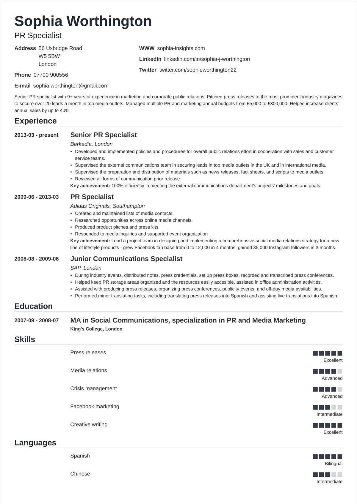
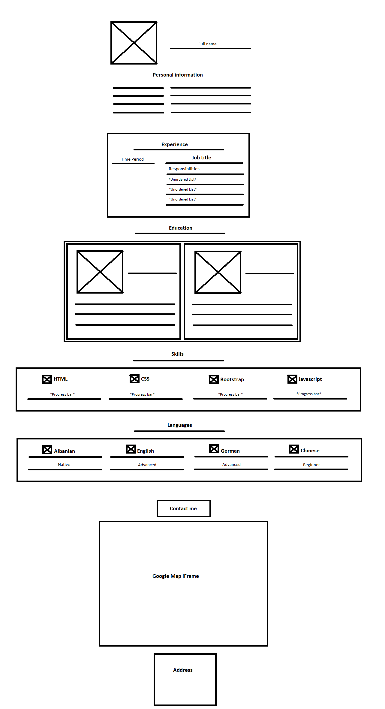

Hello, I'm Edin Azizi.

The picture on the left represents what I am trying to recreate.
There are 3 pages I've created:
The overview (this page)
My attempt at recreating the CV in only HTML without CSS.
The contact form
Mbas ligjerates se sotme (14.06.2022) vendosa me e provu edhe
nje here me bo CV pasi qe nuk jam nda i knaqun me pamjen e
CVs te pare.
New CV made following the Wireframe below.
